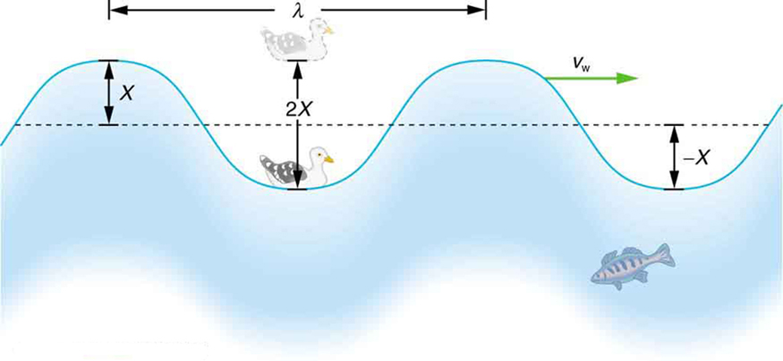
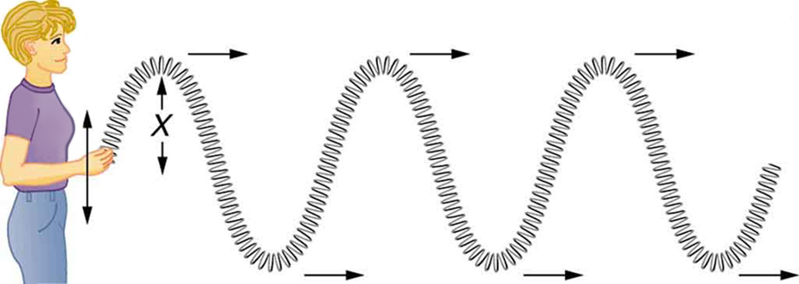
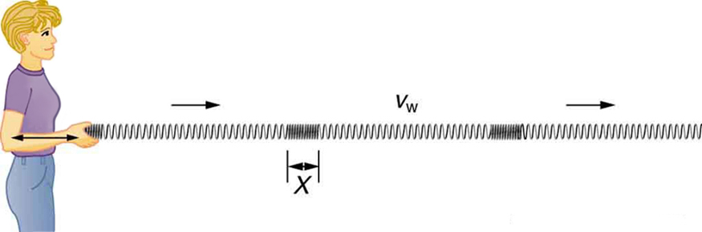
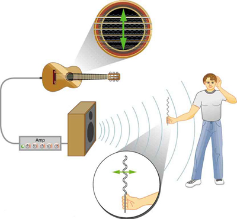

Waves in the ocean behave similarly to all other types of waves. (credit: Steve Jurveston, Flickr)
What do we mean when we say something is a wave? The most intuitive and easiest wave to imagine is the familiar water wave. More precisely, a wave is a disturbance that propagates, or moves from the place it was created. For water waves, the disturbance is in the surface of the water, perhaps created by a rock thrown into a pond or by a swimmer splashing the surface repeatedly. For sound waves, the disturbance is a change in air pressure, perhaps created by the oscillating cone inside a speaker. For earthquakes, there are several types of disturbances, including disturbance of Earth’s surface and pressure disturbances under the surface. Even radio waves are most easily understood using an analogy with water waves. Visualizing water waves is useful because there is more to it than just a mental image. Water waves exhibit characteristics common to all waves, such as amplitude, period, frequency and energy. All wave characteristics can be described by a small set of underlying principles.
A wave is a disturbance that propagates, or moves from the place it was created. The simplest waves repeat themselves for several cycles and are associated with simple harmonic motion. Let us start by considering the simplified water wave in the figure. The wave is an up and down disturbance of the water surface. It causes a sea gull to move up and down in simple harmonic motion as the wave crests and troughs (peaks and valleys) pass under the bird. The time for one complete up and down motion is the wave’s period . The wave’s frequency is , as usual. The wave itself moves to the right in the figure. This movement of the wave is actually the disturbance moving to the right, not the water itself (or the bird would move to the right). We define wave velocity to be the speed at which the disturbance moves. Wave velocity is sometimes also called the propagation velocity or propagation speed, because the disturbance propagates from one location to another.
Misconception Alert
Many people think that water waves push water from one direction to another. In fact, in water waves far from shore, the particles of water tend to stay in one location, save for moving in circles due to the energy in the wave. The energy moves forward through the water, but the water stays in one place. If you feel yourself pushed in an ocean, far from the shore, what you feel is the energy of the wave, not a rush of water.

An idealized ocean wave passes under a sea gull that bobs up and down in simple harmonic motion. The wave has a wavelength , which is the distance between adjacent identical parts of the wave. The up and down disturbance of the surface propagates parallel to the surface at a speed .
The water wave in the figure also has a length associated with it, called its wavelength
, the distance between adjacent identical parts of a wave. ( is the distance parallel to the direction of propagation.) The speed of propagation is the distance the wave travels in a given time, which is one wavelength in the time of one period. In equation form, that is
or
This fundamental relationship holds for all types of waves. For water waves, is the speed of a surface wave; for sound, is the speed of sound; and for visible light, is the speed of light, for example.
Take-Home Experiment: Waves in a Bowl
Fill a large bowl or basin with water and wait for the water to settle so there are no ripples. Gently drop a cork into the middle of the bowl. Estimate the wavelength and period of oscillation of the water wave that propagates away from the cork. Remove the cork from the bowl and wait for the water to settle again. Gently drop the cork at a height that is different from the first drop. Does the wavelength depend upon how high above the water the cork is dropped?
Calculate the Velocity of Wave Propagation: Gull in the Ocean
Calculate the wave velocity of the ocean wave in the figure if the distance between wave crests is 10.0 m and the time for a sea gull to bob up and down is 5.00 s.
Strategy
We are asked to find . The given information tells us that and . Therefore, we can use
to find the wave velocity.
Solution
Enter the known values into :
Solve for to find
Discussion
This slow speed seems reasonable for an ocean wave. Note that the wave moves to the right in the figure at this speed, not the varying speed at which the sea gull moves up and down.
Transverse and Longitudinal Waves
A simple wave consists of a periodic disturbance that propagates from one place to another. The wave in the figure propagates in the horizontal direction while the surface is disturbed in the vertical direction. Such a wave is called a transverse wave or shear wave; in such a wave, the disturbance is perpendicular to the direction of propagation. In contrast, in a longitudinal wave or compressional wave, the disturbance is parallel to the direction of propagation. the figure shows an example of a longitudinal wave. The size of the disturbance is its amplitude X and is completely independent of the speed of propagation .

In this example of a transverse wave, the wave propagates horizontally, and the disturbance in the cord is in the vertical direction.

In this example of a longitudinal wave, the wave propagates horizontally, and the disturbance in the cord is also in the horizontal direction.
Waves may be transverse, longitudinal, or a combination of the two. (Water waves are actually a combination of transverse and longitudinal. The simplified water wave illustrated in the figure
shows no longitudinal motion of the bird.) The waves on the strings of musical instruments are transverse—so are electromagnetic waves, such as visible light.
Sound waves in air and water are longitudinal. Their disturbances are periodic variations in pressure that are transmitted in fluids. Fluids do not have appreciable shear strength, and thus the sound waves in them must be longitudinal or compressional. Sound in solids can be both longitudinal and transverse.

The wave on a guitar string is transverse. The sound wave rattles a sheet of paper in a direction that shows the sound wave is longitudinal.
Earthquake waves under Earth’s surface also have both longitudinal and transverse components (called compressional or P-waves and shear or S-waves, respectively). These components have important individual characteristics—they propagate at different speeds, for example. Earthquakes also have surface waves that are similar to surface waves on water.
Check Your Understanding
Why is it important to differentiate between longitudinal and transverse waves?
In the different types of waves, energy can propagate in a different direction relative to the motion of the wave. This is important to understand how different types of waves affect the materials around them.
Wave on a String
Watch a string vibrate in slow motion. Wiggle the end of the string and make waves, or adjust the frequency and amplitude of an oscillator. Adjust the damping and tension. The end can be fixed, loose, or open.
Test Prep for AP Courses
What is the difference between the waves coming from a tuning fork and electromagnetic waves?
The waves coming from a tuning fork are mechanical waves that are longitudinal in nature, whereas electromagnetic waves are transverse in nature.
Represent longitudinal and transverse waves in a graphical form.
Why is the sound produced by a tambourine different from that produced by drums?
The sound energy coming out of an instrument depends on its size. The sound waves produced are relative to the size of the musical instrument. A smaller instrument such as a tambourine will produce a high-pitched sound (higher frequency, shorter wavelength), whereas a larger instrument such as a drum will produce a deeper sound (lower frequency, longer wavelength).
A transverse wave is traveling left to right. Which of the following is correct about the motion of particles in the wave?
The particles move up and down when the wave travels in a vacuum.
The particles move left and right when the wave travels in a medium.
The particles move up and down when the wave travels in a medium.
The particles move right and left when the wave travels in a vacuum.
The graph shows propagation of a mechanical wave. What is the wavelength of this wave?
Section Summary
A wave is a disturbance that moves from the point of creation with a wave velocity .
A wave has a wavelength , which is the distance between adjacent identical parts of the wave.
Wave velocity and wavelength are related to the wave’s frequency and period by or
A transverse wave has a disturbance perpendicular to its direction of propagation, whereas a longitudinal wave has a disturbance parallel to its direction of propagation.
Conceptual Questions
Give one example of a transverse wave and another of a longitudinal wave, being careful to note the relative directions of the disturbance and wave propagation in each.
What is the difference between propagation speed and the frequency of a wave? Does one or both affect wavelength? If so, how?
Problems & Exercises
Storms in the South Pacific can create waves that travel all the way to the California coast, which are 12,000 km away. How long does it take them if they travel at 15.0 m/s?
Waves on a swimming pool propagate at 0.750 m/s. You splash the water at one end of the pool and observe the wave go to the opposite end, reflect, and return in 30.0 s. How far away is the other end of the pool?
Wind gusts create ripples on the ocean that have a wavelength of 5.00 cm and propagate at 2.00 m/s. What is their frequency?
How many times a minute does a boat bob up and down on ocean waves that have a wavelength of 40.0 m and a propagation speed of 5.00 m/s?
Scouts at a camp shake the rope bridge they have just crossed and observe the wave crests to be 8.00 m apart. If they shake the bridge twice per second, what is the propagation speed of the waves?
What is the wavelength of the waves you create in a swimming pool if you splash your hand at a rate of 2.00 Hz and the waves propagate at 0.800 m/s?
What is the wavelength of an earthquake that shakes you with a frequency of 10.0 Hz and gets to another city 84.0 km away in 12.0 s?
Radio waves transmitted through space at by the Voyager spacecraft have a wavelength of 0.120 m. What is their frequency?
Your ear is capable of differentiating sounds that arrive at the ear just 1.00 ms apart. What is the minimum distance between two speakers that produce sounds that arrive at noticeably different times on a day when the speed of sound is 340 m/s?
(a) Seismographs measure the arrival times of earthquakes with a precision of 0.100 s. To get the distance to the epicenter of the quake, they compare the arrival times of S- and P-waves, which travel at different speeds. the figure) If S- and P-waves travel at 4.00 and 7.20 km/s, respectively, in the region considered, how precisely can the distance to the source of the earthquake be determined? (b) Seismic waves from underground detonations of nuclear bombs can be used to locate the test site and detect violations of test bans. Discuss whether your answer to (a) implies a serious limit to such detection. (Note also that the uncertainty is greater if there is an uncertainty in the propagation speeds of the S- and P-waves.)
A seismograph as described in above problem.(credit: Oleg Alexandrov)
Key terms
longitudinal wave a wave in which the disturbance is parallel to the direction of propagation
transverse wave a wave in which the disturbance is perpendicular to the direction of propagation
wave velocity the speed at which the disturbance moves. Also called the propagation velocity or propagation speed
wavelength the distance between adjacent identical parts of a wave